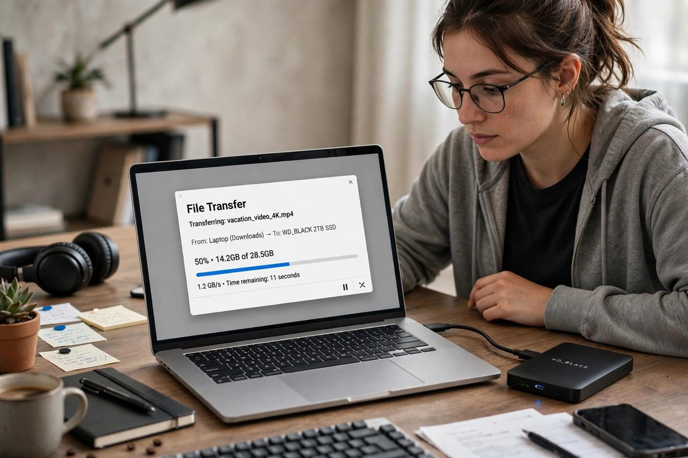

Home > Guides > How to Share Large Files Fast Without Waiting Hours
How to Share Large Files Fast Without Waiting Hours
A practical guide from PairDrop.

Large files expose the weakness of every casual sharing method. A video, a design project or a backup that is several gigabytes can take hours over a slow connection, fail halfway, or arrive compressed and unusable. The solution is not to try harder with the same tool, but to choose a method built for size. This guide explains how to judge the size of the job, pick a fast method, and get a large file from one device to another without babysitting the transfer. It also covers the mistakes that waste the most time, such as starting a transfer with almost no storage left on the receiving device.
Check the size before you choose a method
Open the file properties and look at the real size before you start. A file under 100 MB is small and almost any method works. A file between 100 MB and 2 GB is medium and needs Wi-Fi or a cable. A file over 2 GB is large and needs a fast local method or a drive made for the job. Also check the free space on the receiving device, because a transfer that runs out of space fails near the end. If the file is a folder, check the total size of everything inside it, not just the first file. A few minutes of checking saves hours of failed transfers and tells you honestly whether you need a cable, a drive or a faster network.
Use a cable or a drive for the biggest files
For files over a few gigabytes, a USB cable or an external drive is usually the fastest and most reliable choice. A cable avoids wireless interference, and a modern USB drive can copy gigabytes in minutes. Copy the file, verify it opens on the destination, and only then delete the original. If you use a drive, format it in a system both devices can read, and be careful with drives formatted for only one operating system. Keep the drive still during the copy and do not unplug it early. For repeated large transfers, such as weekly video backups, a dedicated drive and a fixed routine beat any wireless method for speed and peace of mind.
Split or compress when you must send online
If you must send a large file over the internet, splitting it into parts or compressing it can help. Compression works best on documents, folders with many small files, and uncompressed data; it does little for video that is already compressed. Splitting a file into parts means one failed part can be resent without starting over. Whatever you do, tell the recipient what to expect: the total size, the number of parts, and how to rejoin them. A clear message prevents confusion and repeated downloads. Also consider sending a smaller preview first, so the recipient can confirm it is the right file before downloading the full version.
Make the next large transfer faster
Keep a short checklist for large transfers: charge both devices, use a short good-quality cable, close other downloads, and transfer at a time when the network is quiet. If you share large files often, set up one permanent method, such as a shared folder on your home network or a regular backup drive, instead of improvising each time. Label drives and folders clearly with dates, so you can find the right version later. A little routine turns a dreaded hour-long transfer into a five-minute job you barely notice.
Quick tips
- Check size and free space before you start
- Use a cable or drive for files over 2 GB
- Send a small preview before the full file
- Label drives and folders with dates
Frequently asked questions
What is the fastest way to share a 5 GB video?
A USB cable to a computer or a fast external drive is usually fastest. Over a network, a wired connection or strong local Wi-Fi is next best. Uploading to the internet is usually slowest.
Does compressing a video make it faster to share?
It can make the file smaller, but video is already heavily compressed, so the saving is often small and quality can suffer. Compression helps far more with documents and folders of many files.
Why does my large transfer keep failing?
The common causes are a weak Wi-Fi signal, a device going to sleep, too little free space, or a time limit on the sharing service. Use a cable, keep devices awake, and check free space first.